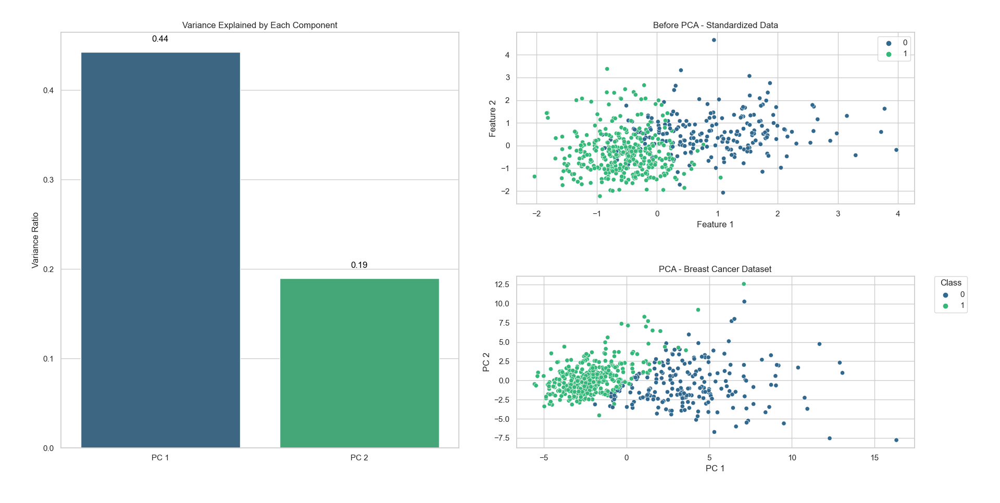
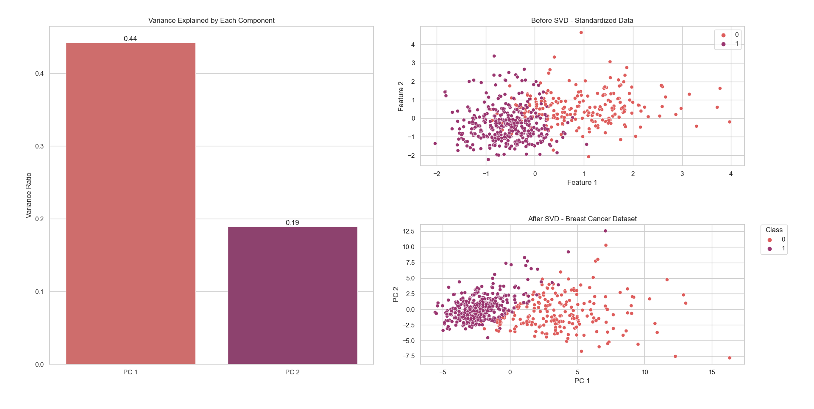
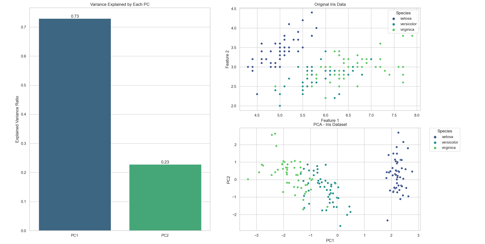
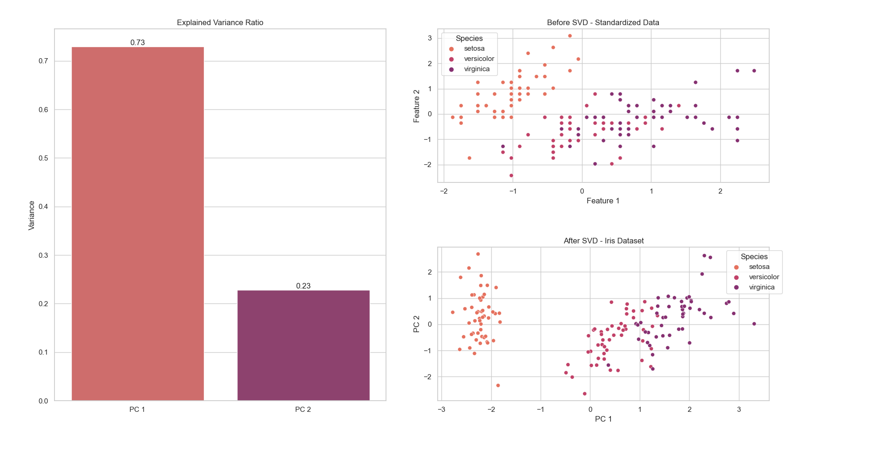
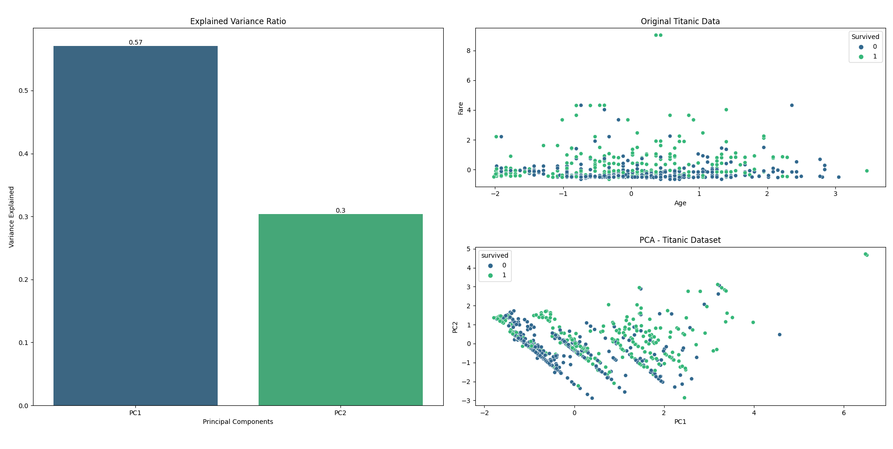
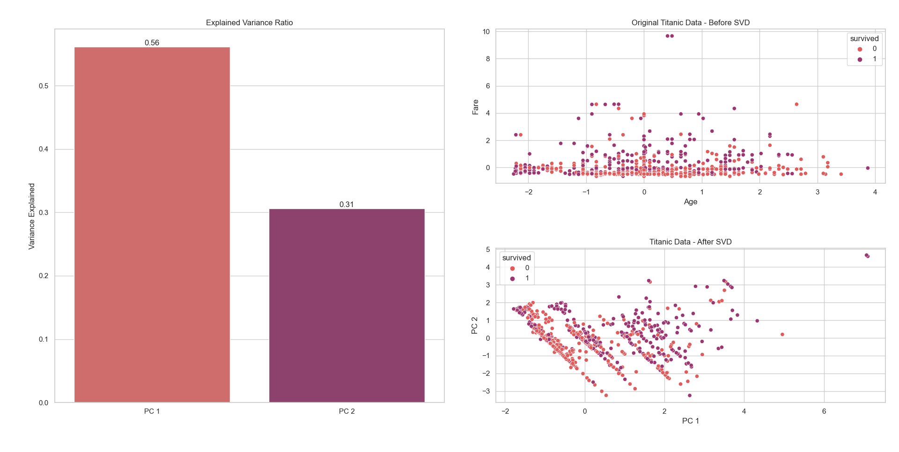

Projekt z Metod Numerycznych
Wstęp
Charakterystyka Problemu
W uczeniu maszynowym jednym z kluczowych wyzwań jest efektywne przetwarzanie dużych zestawów danych, które często zawierają wiele zbędnych lub skorelowanych cech. Redukcja wymiarowości jest techniką przetwarzania wstępnego, która pomaga w redukcji liczby zmiennych wejściowych, zachowując przy tym jak najwięcej informacji zawartych w danych. Stosowanie tej techniki może znacząco poprawić wydajność algorytmów uczenia maszynowego poprzez zmniejszenie złożoności obliczeniowej oraz pomóc w uniknięciu nadmiaru wymiarowości.
Cel i Zakres Projektu
Celem projektu jest zaimplementowanie i zastosowanie dwóch technik numerycznych: Analizy Głównych Składowych (PCA) oraz Rozkładu na Wartości Osobliwe (SVD) do redukcji wymiarów danych. Projekt będzie oceniał skuteczność tych metod w kontekście poprawy wydajności modeli uczenia maszynowego oraz wizualizacji danych wielowymiarowych.
Podstawowe Informacje na Temat Użytych Metod
- PCA (Principal Component Analysis): Metoda statystyczna, która przekształca początkowe, skorelowane zmienne w nowy zestaw zmiennych, które są liniowo niezależne (składowe główne). Składowe te są uzyskiwane na podstawie wartości własnych macierzy kowariancji danych.
- SVD (Singular Value Decomposition): Technika matematyczna używana do dekompozycji macierzy na trzy inne macierze, ujawniająca wewnętrzną strukturę danych, która może być użyteczna w redukcji wymiarów oraz innych zastosowaniach takich jak kompresja danych czy usuwanie szumów.
Analiza Teoretyczna
Przegląd Metod Numerycznych
Analiza Głównych Składowych (PCA) i Rozkład na Wartości Osobliwe (SVD) to dwie kluczowe metody redukcji wymiarowości w analizie danych. Obydwie techniki stosują przekształcenie liniowe, ale korzystają z różnych podejść matematycznych. PCA skupia się na wyznaczaniu głównych składowych poprzez analizę wariancji i jest często używana do zachowania jak największej ilości informacji. SVD natomiast dekomponuje macierze na wartości osobliwe oraz lewe i prawe wektory osobliwe, co pozwala na zastosowanie w różnorodnych kontekstach, w tym uczeniu maszynowym. W praktyce, PCA jest bardziej zorientowana na eksplorację danych i statystykę, podczas gdy SVD ma szersze zastosowanie, włączając w to obliczenia numeryczne. Obie metody pozwalają na identyfikację nowych osi danych, co ułatwia interpretację i analizę dużych zestawów danych. Dzięki temu, zarówno PCA jak i SVD są nieocenione w redukcji złożoności danych bez znaczącej utraty informacji.
Matematyczne Podstawy i Założenia
- PCA: Analiza Głównych Składowych (PCA) jest metodą statystyczną służącą do maksymalizacji wariancji w danych. Pierwsza główna składowa, którą wyznacza PCA, charakteryzuje się największą wariancją, a każda kolejna ma mniejszą. Składowe te są matematycznie reprezentowane przez wektory własne macierzy kowariancji danych, z wartościami własnymi wskazującymi na kolejno największą do najmniejszej wariancję. Ta metoda pozwala na efektywną redukcję wymiarów, zachowując przy tym kluczowe informacje z danych.
- SVD: SVD rozkłada macierz A na trzy macierze U, \(\Sigma\), V^T, gdzie U i V są ortonormalnymi macierzami wektorów własnych, a \(\Sigma\) zawiera wartości osobliwe (singular values). Wartości osobliwe wskazują na “siłę” lub “ważność” poszczególnych wymiarów.
Analiza Zbieżności, Stabilności i Dokładności
- PCA: Metoda Analizy Głównych Składowych (PCA) wykazuje stosunkowo dużą stabilność, jeśli dane analizowane są czyste, czyli nie zawierają znacznych ilości szumów oraz brakujących wartości. Kiedy dane są dobrze przygotowane, PCA efektywnie redukuje wymiarowość, zachowując istotne informacje. Jednakże, metoda ta może napotkać na trudności z zbieżnością i dokładnością analizy, jeśli różnice między wartościami własnymi macierzy kowariancji są minimalne. W takich przypadkach, bliskie sobie wartości własne mogą prowadzić do problemów z jednoznacznym określeniem kolejności głównych składowych, co wpływa na wyniki redukcji wymiarów.
- SVD: Rozkład na Wartości Osobliwe (SVD) charakteryzuje się większą stabilnością niż Analiza Głównych Składowych (PCA) w sytuacjach, gdy dane są zaszumione. Stabilność ta wynika z faktu, że SVD minimalizuje błąd w sensie najmniejszych kwadratów, co oznacza, że metoda ta jest bardziej odporna na zakłócenia danych. SVD jest również uważana za bardzo efektywną technikę w procesie dekompozycji macierzy, jednakże wiąże się to z większymi wymaganiami obliczeniowymi, szczególnie w przypadku analizy dużych macierzy. Ta złożoność obliczeniowa może być wyzwaniem, ale wynikające z niej korzyści często przewyższają koszty, zwłaszcza w zastosowaniach wymagających precyzyjnej analizy danych.
Opis implementacji
Testy zostały przeprowadzone w środowisku Python, korzystając z trzech zbiorów danych: titanic, iris, breast_cancer.
- Zbiór danych
iris(z biblioteki sklearn.datasets): Zawiera informacje o trzech gatunkach irysów (setosa, versicolor, virginica).Każda próbka w zbiorze posiada cztery cechy: długość i szerokość płatka oraz długość i szerokość kielicha. - Zbiór danych
breast_cancer(z biblioteki sklearn.datasets): Skupia się na predykcji, czy guz piersi jest złośliwy czy łagodny, na podstawie cech takich jak tekstura, obwód, gładkość, obszar i wielkość guza, oraz inne cechy obrazu biopsji. - Zbiór danych
titanic(z biblioteki seaborn): Zawiera informacje o pasażerach Titanica, takie jak wiek, płeć, klasa, której pasażerowie byli częścią, cena biletu, a także informacje o tym, czy dana osoba przeżyła katastrofę czy nie.
Na każdym zbiorze danych przeprowadzono standaryzację, aby poprawić jakość i porównywalność wyników. W ramach projektu zaimplementowano dwie metody redukcji wymiarowości: Analizę Składowych Głównych (PCA) oraz Rozkład Osobliwy (SVD). Każda z metod została zastosowana osobno na każdym zbiorze danych.
Testowanie
Porównano skuteczność metod PCA i SVD na każdym z trzech zbiorów danych zarówno przed, jak i po ich zastosowaniu. Celem testów była ocena, która z metod lepiej radzi sobie z redukcją wymiarowości, zachowując przy tym kluczowe informacje zawarte w danych. Testy miały na celu nie tylko sprawdzenie jak zmienia się wydajność algorytmów klasyfikacyjnych po redukcji wymiarów, ale również ocenę, jak poszczególne metody wpływają na jakość i separowalność danych w przestrzeni cech.
Wyniki i dyskusja
Zbiór danych breast_cancer
PCA

Przedstawione zostały wyniki redukcji wymiarowości dla zestawu danych dotyczących raka piersi. Na podstawie lewego wykresu, który ilustruje wariancję wyjaśnioną przez poszczególne składowe, obserwujemy, że pierwszy komponent główny (PC1) odpowiada za 44% wariancji, a drugi komponent (PC2) za 19%. Łącznie daje to 63% całkowitej wyjaśnionej wariancji, co wskazuje, że te dwa komponenty zachowują większość informacji z zestawu danych. Wykres rozproszenia przedstawiający dane przed PCA ukazuje, że dane są stosunkowo dobrze zgrupowane, lecz rozproszone wzdłuż obu cech. Po transformacji PCA, wykres rozproszenia pokazuje dane w nowej przestrzeni, gdzie wyraźniej widoczna jest separacja między dwiema klasami, co może ułatwić dalszą klasyfikację.
SVD

SVD również zastosowano do tego samego zestawu danych. Podobnie jak w PCA, wartości wyjaśnionej wariancji dla komponentów są identyczne: 44% dla pierwszego i 19% dla drugiego komponentu, co łącznie daje 63% wyjaśnionej wariancji. Wykresy rozproszenia dla danych przed i po zastosowaniu SVD wykazują podobne charakterystyki co w PCA, sugerując, że po redukcji wymiarowości obserwacje z różnych klas są lepiej oddzielone.
Porównanie
Porównując wyniki PCA i SVD, zauważamy, że obie metody osiągnęły podobne poziomy wyjaśnionej wariancji. W obu przypadkach dwa komponenty (PC1 i PC2 lub ich odpowiedniki w SVD) skutecznie oddzielają klasy obserwacji na wykresach rozproszenia. Możemy wnioskować, że dla tego konkretnego zestawu danych, obie techniki są równie efektywne w redukcji wymiarów, zachowując przy tym kluczowe informacje niezbędne do identyfikacji i rozróżnienia klas. Wykresy rozproszenia wskazują na to, że dane są teraz lepiej przygotowane do dalszej analizy, takiej jak klasyfikacja czy grupowanie.
Zbiór danych iris
PCA

Wykres wariancji wyjaśnionej przez PCA dla zestawu danych Iris prezentuje, że pierwszy główny komponent (PC1) wyjaśnia imponujące 73% wariancji, a drugi komponent (PC2) wyjaśnia dodatkowe 23%. Sumarycznie, te dwa komponenty wyjaśniają aż 96% wariancji danych. Jest to znaczący wynik, sugerujący, że redukcja wymiarów do tych dwóch komponentów zachowuje prawie całą strukturę danych. Wykres rozproszenia po lewej stronie ukazuje oryginalne dane w przestrzeni pierwszych dwóch cech, gdzie trzy gatunki irysów są już w miarę dobrze oddzielone. Natomiast wykres rozproszenia po prawej stronie, po transformacji PCA, wyraźnie oddziela gatunek setosa od pozostałych dwóch, co wskazuje na dużą efektywność PCA w izolowaniu tego gatunku na podstawie głównych komponentów.
SVD

Rezultaty SVD prezentowane na wykresach dla tych samych danych Iris również wykazują, że pierwszy komponent ma 73% wariancji wyjaśnionej, a drugi 23%. Tak jak w PCA, suma wyjaśnionej wariancji to 96%. To wskazuje na podobieństwo efektów uzyskanych przez obie techniki. Wykres rozproszenia danych przed zastosowaniem SVD pokazuje rozłożenie cech bez żadnej transformacji. Natomiast po transformacji SVD, obserwujemy podobną klarowność separacji gatunku setosa jak w PCA, z pewnymi przesunięciami punktów dla pozostałych gatunków.
Porównanie
Analizując oba zestawy wyników, PCA i SVD wykazują niemal identyczną efektywność w wyjaśnieniu wariancji danych Iris. Obydwie metody z powodzeniem redukują dane do dwóch komponentów, zachowując przy tym główną strukturę danych i umożliwiając łatwą wizualizację separacji gatunków irysów. Transformacja PCA i SVD sprawia, że gatunek setosa jest łatwo rozróżnialny od versicolor i virginica, które są również lepiej oddzielone od siebie po transformacji niż w oryginalnych danych. Oba podejścia dowodzą, że dwie wymiary są wystarczające do reprezentacji złożoności danych i mogą być wykorzystane w dalszych analizach klasyfikacyjnych czy badaniach biologicznych.
Zbiór danych titanic
PCA

Dla zestawu danych związanych z Titanicem, pierwszy główny komponent (PC1) wyjaśnia 57% wariancji, a drugi komponent (PC2) odpowiada za 30% wariancji, co daje razem 87% wyjaśnionej wariancji. Wykres słupkowy jasno przedstawia tę dominację PC1 nad PC2 w zakresie wyjaśnianej wariancji. Przed transformacją PCA, oryginalne dane przedstawiające wiek i opłatę za bilet wydają się być szeroko rozproszone bez widocznej separacji między osobami, które przeżyły a tymi, które nie przeżyły. Po zastosowaniu PCA, dane są przedstawione w nowej przestrzeni zdefiniowanej przez PC1 i PC2, gdzie można zaobserwować pewną tendencję do grupowania, choć wciąż istnieje znaczne nakładanie się danych.
SVD

Podobnie, po zastosowaniu SVD do tych samych danych Titanic, wyniki pokazują, że pierwszy komponent wyjaśnia 56% wariancji, a drugi 31%, co łącznie również daje 87% wyjaśnionej wariancji. Wykres przed transformacją SVD pokazuje podobny rozkład danych co w przypadku PCA. Po transformacji SVD, dane są prezentowane w nowym układzie współrzędnych, gdzie rozróżnienie między osobami, które przeżyły a tymi, które nie przeżyły, jest nieco bardziej zauważalne niż na oryginalnym wykresie rozproszenia.
Porównanie
Porównując wyniki PCA i SVD dla zestawu danych Titanic, obie techniki prezentują niemal identyczną zdolność do wyjaśnienia wariancji danych, z nieznacznymi różnicami w procentowych wartościach dla poszczególnych komponentów. Co istotne, transformacje te wydają się być użyteczne w potencjalnym wzmacnianiu wzorców rozróżniających przeżywalność, co może być kluczowe w dalszej analizie predykcyjnej czy klasyfikacyjnej. Choć dane po transformacji nadal wykazują nakładanie się klas, nowa przestrzeń komponentów może oferować lepszą możliwość separacji klasyfikatora.
Efekty użycia PCA i SVD w uczeniu maszynowym
Wstęp
Analiza składowych głównych (PCA) i rozkład według wartości osobliwych (SVD) to popularne techniki redukcji wymiarowości wykorzystywane w uczeniu maszynowym do przetwarzania danych o wysokim wymiarze. Te metody nie tylko przyspieszają obliczenia, ale mogą także pomagać w eliminacji szumu i korelacji między cechami.
Heloc - opis zbioru danych
Zbiór danych HELOC dostarczony przez FICO skupia się na liniach kredytowych (HELOC - Home Equity Line of Credit), które są zazwyczaj oferowane przez banki jako procent wartości kapitału własnego domu (różnica między obecną wartością rynkową domu a jego ceną zakupu). Klienci w tym zbiorze danych ubiegali się o kredyt w przedziale od 5 000 do 150 000 dolarów. Podstawowe zadanie polega na wykorzystaniu informacji o wnioskodawcy z jego raportu kredytowego do przewidywania, czy spłacą swoje konto HELOC w ciągu 2 lat. Zbiór zawiera różne cechy, takie jak szacunkowe ryzyko, liczba miesięcy od pierwszej i ostatniej transakcji, średni czas rozwiązania problemów, liczba zadowalających transakcji, procent legalnych transakcji, oraz inne wskaźniki finansowe i kredytowe.
Przegląd Eksperymentów
W przeprowadzonych eksperymentach zastosowano PCA i SVD do zbioru danych HELOC oraz zbioru Breast Cancer z repozytorium UCI. Do oceny modeli użyto klasyfikatora drzew decyzyjnych dla PCA oraz regresji logistycznej dla SVD i PCA.
Wyniki i Analiza
- Zbiór danych
HELOC:
- Przed PCA: Dokładność klasyfikacji wyniosła 62%.
- Po PCA: Dokładność klasyfikacji spadła do 56%.
- Zbiór danych
Breast Cancer (SVD):
- Przed SVD: Dokładność klasyfikacji wyniosła 95.61%.
- Po SVD: Dokładność klasyfikacji wzrosła do 97.37%.
- Zbiór danych
Breast Cancer (SVD):
- Przed PCA: Dokładność klasyfikacji wyniosła 95.61%.
- Po PCA: Dokładność klasyfikacji wzrosła do 96.49%.
Dyskusja
Z przeprowadzonych eksperymentów wynika, że zastosowanie SVD i PCA może mieć różne efekty w zależności od rodzaju danych i użytego modelu:
W przypadku zbioru danych HELOC zastosowanie PCA spowodowało spadek dokładności. Może to wynikać z utraty istotnych informacji, które są kluczowe dla procesu decyzyjnego w modelach drzewa decyzyjnego. PCA redukuje wymiarowość poprzez zachowanie głównych kierunków wariancji, co nie zawsze koreluje z zachowaniem najbardziej istotnych cech dla klasyfikacji.
W przypadku zbioru danych Breast Cancer, zarówno PCA, jak i SVD poprawiły dokładność klasyfikacji przy użyciu regresji logistycznej. Jest to szczególnie zauważalne dla SVD, które zachowało więcej istotnych informacji w mniejszej liczbie wymiarów. To wskazuje, że dla danych, które naturalnie zawierają mniej szumu i są bardziej skoncentrowane wokół głównych składowych, redukcja wymiarowości może faktycznie poprawić wydajność klasyfikacji.
Wnioski
PCA i SVD mogą być cennymi narzędziami w przetwarzaniu danych, jednak ich efektywność jest silnie zależna od kontekstu zastosowania i charakterystyki danych. SVD wydaje się być bardziej odporny na utratę kluczowych informacji w kontekście stosowania w regresji logistycznej, podczas gdy PCA może być bardziej narażone na pomijanie ważnych cech w kontekstach, gdzie kierunki maksymalnej wariancji nie są związane z klasyfikacją.
Zalecenia
Przed zastosowaniem PCA czy SVD warto dokładnie analizować strukturę danych oraz prowadzić eksperymenty porównawcze, by wybrać metodę najbardziej odpowiednią dla danego problemu. Ponadto, warto rozważyć inne techniki redukcji wymiarów lub selekcji cech, które mogą lepiej odpowiadać na specyfikę danych, takie jak analiza składowych niezależnych (ICA) czy selekcja cech oparta na ważności atrybutów w modelach.